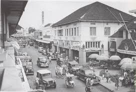
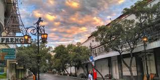
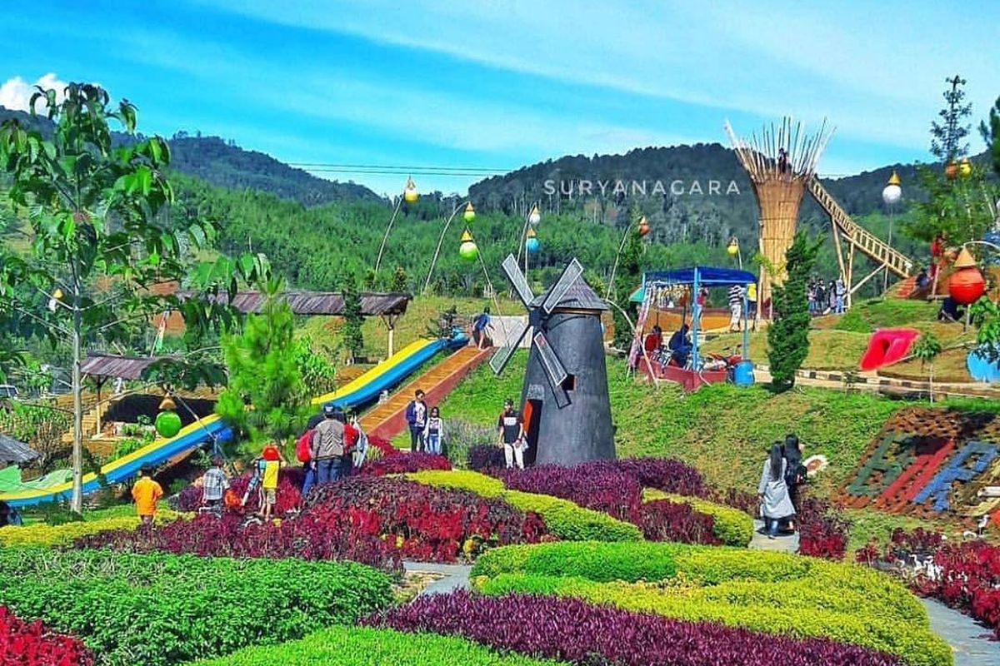
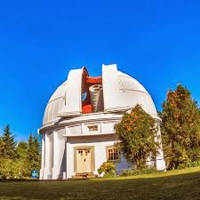
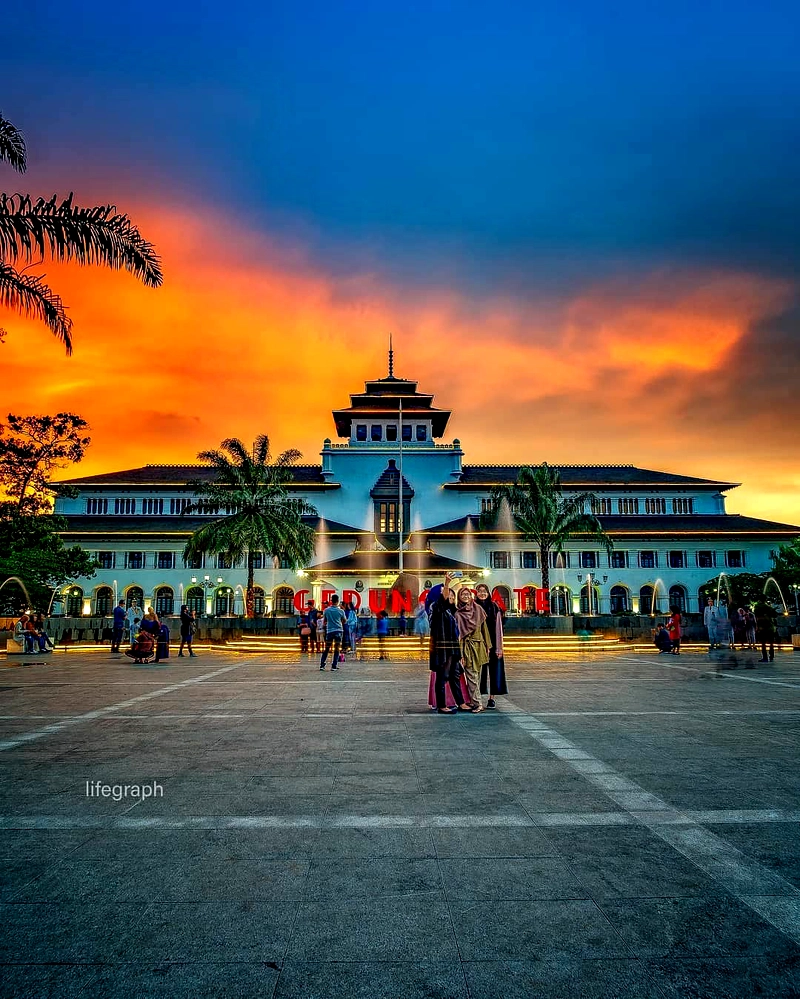

Sejarah

Pendiri Kota Bandung adalah Bupati R.A. Wiranatakusumah II,
Awalnya, ibukota Kabupaten Bandung berada di Krapyak (Dayeuhkolot).
Karena lokasi Krapyak tidak strategis dan sering banjir,
Bupati Wiranatakusumah II berinisiatif untuk memindahkannya.
Pada tahun 1808, Daendels membangun Jalan Raya Pos yang melintasi wilayah Bandung.
Jauh sebelum Daendels mengeluarkan surat perintah pemindahan ibukota,
Bupati sudah mencari lokasi baru. Pada akhir tahun 1808/awal 1809,
Bupati dan rakyatnya mulai pindah dan membuka hutan di lokasi baru, yang sekarang menjadi pusat Kota Bandung.
Pembangunan kota ini dipimpin langsung oleh Bupati.
Kota Bandung diresmikan sebagai ibukota baru pada tanggal 25 September 1810, yang hingga kini diperingati sebagai Hari Jadi Kota Bandung.
Geografis

Secara geografis, Kota Bandung berada di sebuah cekungan atau basin yang dikelilingi oleh pegunungan di Provinsi Jawa Barat.
Kota ini terletak pada ketinggian rata-rata 768 meter di atas permukaan laut, dengan bagian utara yang lebih tinggi dan bagian selatan yang lebih rendah.
Topografi cekungan ini membuat Bandung memiliki iklim yang sejuk, meskipun saat ini suhunya cenderung meningkat.
Wilayah Bandung berbatasan langsung dengan Kabupaten Bandung dan Kabupaten Bandung Barat di sebelah utara dan timur, serta Kabupaten Bandung di sebelah selatan. Di bagian barat, Kota Bandung berbatasan dengan Kota Cimahi dan Kabupaten Bandung Barat.
Mayoritas lahan di kota ini telah digunakan untuk permukiman padat penduduk, menjadikannya salah satu kota metropolitan terbesar di Indonesia. Kondisi geografis ini memberikan karakteristik unik bagi Bandung, baik dari sisi lingkungan maupun tantangan tata ruang.
Wisata

Bandung adalah destinasi wisata yang sangat populer, menawarkan beragam pilihan
mulai dari wisata alam di daerah pegunungan hingga wisata perkotaan yang modern.
Berikut beberapa tempat wisata di Bandung yang bisa kamu kunjungi.
Boscha

Observatorium Bosscha, yang terletak di Lembang, Kabupaten Bandung Barat,
adalah destinasi wisata edukasi yang unik dan bersejarah. Sebagai observatorium astronomi tertua di Indonesia,
tempat ini menawarkan pengalaman istimewa bagi para pengunjung untuk mempelajari
astronomi dan mengamati benda langit. Untuk dapat berkunjung, Anda harus mendaftar dan memesan
tiket secara online melalui situs web resmi mereka, karena kunjungan tidak bisa dilakukan secara spontan.
Observatorium ini menawarkan dua jenis kunjungan utama. Selama kunjungan siang,
Anda akan diajak tur berpemandu untuk melihat teleskop utama, mendengarkan sejarahnya,
dan bahkan mengamati matahari jika cuaca cerah. Sementara itu, kunjungan malam adalah
program paling populer yang memungkinkan pengunjung untuk melihat bulan, planet, dan
bintang melalui teleskop, meskipun program ini memiliki kuota terbatas dan sangat bergantung pada kondisi cuaca.
Biaya tiket kunjungan umumnya sekitar Rp 50.000 per orang, namun sebaiknya Anda selalu memeriksa informasi
terbaru di situs resmi Observatorium Bosscha sebelum merencanakan kunjungan.
Gedung Sate

Gedung Sate adalah salah satu ikon bersejarah paling terkenal di Bandung. Lebih dari sekadar bangunan kantor
pemerintahan, tempat ini juga menjadi destinasi wisata yang menarik.
Gedung Sate dikenal dengan arsitektur kolonialnya yang megah, memadukan gaya Indo-Eropa dengan sentuhan tradisional. Daya tarik utamanya adalah ornamen tusuk sate yang berada di puncak menara, yang menjadi asal-usul namanya. Di depan gedung terdapat lapangan rumput yang luas, sering digunakan sebagai area bersantai atau berfoto dengan latar belakang bangunan yang indah.
Selain menikmati keindahan arsitekturnya, kamu juga bisa masuk ke Museum Gedung Sate. Museum ini menyajikan sejarah pembangunan Gedung Sate dan perkembangan Kota Bandung melalui berbagai media interaktif, seperti tampilan digital dan maket. Museum ini cocok untuk pengunjung dari segala usia, terutama bagi mereka yang tertarik dengan sejarah dan teknologi.
Di area luar, ada beberapa taman kecil yang terawat baik dan sering menjadi spot favorit untuk berfoto. Pada akhir pekan, banyak wisatawan lokal maupun mancanegara yang datang untuk sekadar menikmati suasana, mengambil foto, atau berolahraga.